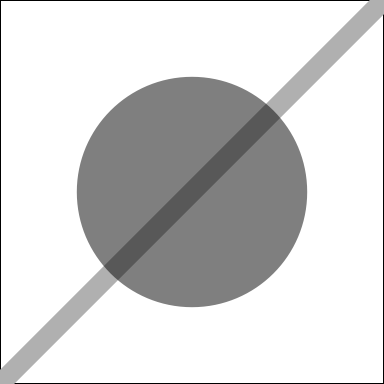
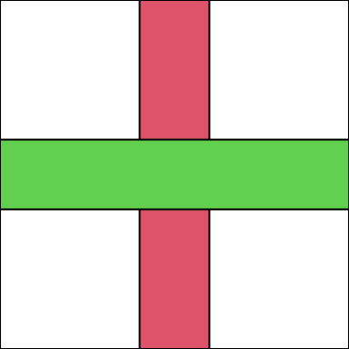
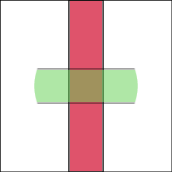
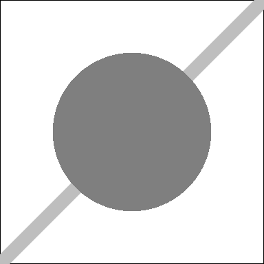

library(grid)Adding Alpha Masks to the Quartz Graphics Device
C
MacOS
Graphics
Background
R version 4.1 added the concept of alpha masks to R graphics, with an interface in the ‘grid’ graphics system.
Any shape(s) can be used to create an alpha mask, but the only thing that matters is the opacity of the final result. The mask below is based on a circle, the important part being that it has a semitransparent fill (a line segment is drawn to show that the circle is semitransparent; the line is visible through the circle). Outside the circle, where we have drawn nothing, the mask is fully transparent.
ac <- circleGrob(r=.3, gp=gpar(col=NA, fill=rgb(0,0,0,.5)))
amask <- as.mask(ac)
We can apply a mask to affect what happens when we draw other shapes. For example, we will work with the following rectangles, one tall and thin and red and one short and wide and green.
r1 <- rectGrob(width=.2, gp=gpar(fill=2))
r2 <- rectGrob(height=.2, gp=gpar(fill=3))
The following code defines a simple function with a mask as its argument. It draws the red rectangle, then pushes a viewport that enforces the mask, then draws the green rectangle.
maskTest <- function(mask) {
grid.rect()
grid.draw(r1)
pushViewport(viewport(mask=mask))
grid.draw(r2)
popViewport()
}The followind code calls that function, passing the amask defined above. The drawing is done on a pdf() graphics device for reasons that will become clear later. The result is that the red rectangle is drawn normally, but the mask means that only part of the green rectangle is drawn (where the rectangle and the circlular mask overlap) and that part is only drawn semitransparent (because the mask is semitransparent).
pdf("alpha-mask.pdf", width=2, height=2)
maskTest(amask)
dev.off()
R version 4.2 added the concept of luminance masks. As with alpha masks, we can create a luminance masks with any shape, but what matters is not the opacity of the final result, but the luminance of the final result; whether the mask is black (which corresponds to full transparency), or white (full opacity), or grey (semitransparency).
We will again work with a mask based on a circle, but this time the circle just has an opaque grey fill (we cannot see the line segment through the circle).
lc <- circleGrob(r=.3, gp=gpar(col=NA, fill="grey50"))
lmask <- as.mask(lc, type="luminance")
The following code calls the maskTest() function again, but this time using the lmask. The result is the same as for the alpha mask, but this time the result is due to the grey values in the luminance mask, where before the result was due to the opacity value in the alpha mask. Again, we use the pdf() device for drawing; this will become clear very soon, I promise!
pdf("lumi-mask.pdf", width=2, height=2)
maskTest(lmask)
dev.off()
Problem statement
Not all graphics devices support masks. For those that do, not all devices support both alpha masks and luminance masks. For example, although the pdf() device used above supports both types of masks, Cairo-based graphics devices, e.g., png(type="cairo"), only support alpha masks. If you try maskTest(lmask) on a Cairo graphics device you will get a warning and the mask with have no effect.
In R version 4.3, support for luminance masks was added to the Quartz graphics device in R (quartz() on MacOS). Unfortunately, in a reverse of the Cairo graphics device problem, Quartz graphics only supports luminance masks so we have not implemented alpha masks on the quartz() device. If you try maskTest(amask) on a quartz() device, you will get a warning and the mask with have no effect.
Proposed solution
The implementation of luminance masks for the quartz() device involves creating a greyscale bitmap image and drawing the mask shapes onto that. This happens in the C function QuartzCreateMask() (in R/src/library/grDevices/src/devQuartz.c). The Quartz function CGContextClipToMask() uses that greyscale image to clip output.
The proposal is that an alpha mask could be implemented by creating an RGBA bitmap image (instead of a greyscale image) for drawing the mask shapes onto and then converting that image to a greyscale one based on the alpha channel of the RGBA image. Once we have a greyscale image from the alpha mask, we can proceed as before.
The dev->capabilities() of the quartz() device would also need updating.
Testing
Some examples of R code and desired output for luminance masks are included in the technical report “Luminance Masks in R Graphics” (faster link).
The ‘gdiff’ package can be useful for checking that test output matches control output.
Project requirements
Familiarity with C. Though there is a strong template of existing code to work from.
Capability to build R from source (on MacOS).
Ability to find, read, and comprehend Apple Core Graphics documentation, e.g., documentation for CGContextClipToMask()
Project resources
Project outcomes
Contribution to the core R code base (would need to be GPL).
Experience with building R from source.
Exposure to the design of R graphics devices and the R graphics device API.
Exposure to R graphics C code, especially that involving graphics devices (R/src/include/R_Ext/GraphicsDevice.h), especially the quartz() device (R/src/library/grDevices/src/devQuartz.c).